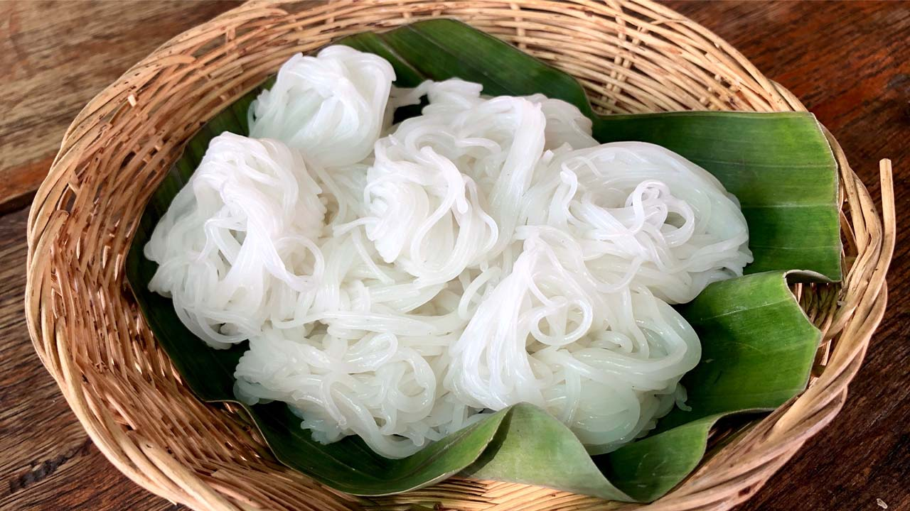

Crafting Comfort: The Art of Homemade Noodles

Introduction:
In the world of comfort food, few dishes hold as much universal appeal
as a steaming bowl of homemade noodles. From the satisfying chewiness
to the endless customization possibilities, making noodles from
scratch is a culinary journey well worth taking. Join us as we delve
into the delightful world of crafting your own noodles at home, where
the process is as therapeutic as the result is delicious.
The Basic Ingredients:
All-Purpose Flour:
-
A staple for noodle-making, all-purpose flour provides the
right texture and consistency.
Eggs:
-
Eggs add richness and structure to the noodles. The number of
eggs can be adjusted based on your preference.
Salt:
- A pinch of salt enhances the flavor of the noodles.
Water (Optional):
-
While eggs provide moisture, you can add a bit of water if
needed to achieve the desired dough consistency.
Equipment:
Mixing Bowl:
- For combining the ingredients.
Rolling Pin:
- To roll out the dough to the desired thickness.
Knife or Pasta Cutter:
-
For cutting the noodles into your preferred shape and size.
Drying Rack (Optional):
-
If you plan to store the noodles, a drying rack prevents them
from sticking together.